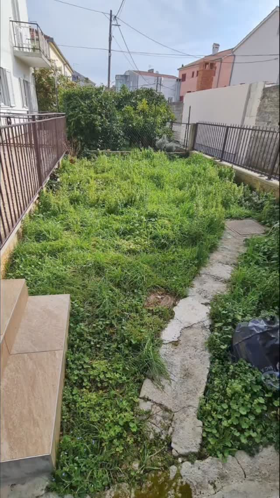

01
Održavanje vrtova i košnja
Košnja trave naš je redoviti posao. Klijentima nudimo jednokratno uređenje ili redovito održavanje – za sve vrste zelenih površina.
Zapušteni vrt možemo jednom temeljito srediti, a uređen vrt preuzeti na redovitu brigu: košnju, zalijevanje i održavanje sustava navodnjavanja.
- Košnja trave
- Uređenje okućnice i dvorišta
- Redovito održavanje zelenih površina